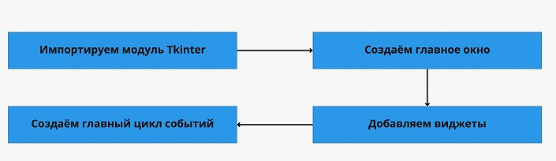

|
Tkinter —
это удобный интерфейс для работы со средствами
Tk. Приложения, созданные на основе этой библиотеки,
кросс-платформенные,
то есть могут запускаться на разных операционных системах.
Схематично работу с Tkinter можно
представить в виде четырёх шагов:

Что здесь происходит:
- Подключаем библиотеку Tkinter с помощью директивы import.
- Создаём главное окно приложения, в котором будут
размещаться все графические элементы.
- Добавляем виджеты — визуальные элементы, выполняющие
определённые действия.
- Создаём главный цикл событий — он включает в себя все
события, происходящие при взаимодействии пользователя
с интерфейсом.
Ключевые объекты в работе с Tkinter — виджеты.
Это аналоги тегов из HTML, которые позволяют создавать
интерактивные и неинтерактивные элементы, например надписи или
кнопки.
Всего их 18, но чаще всего используют следующие:
-
|
№ |
Виджет |
Описание |
|
1 |
Button |
Виджет кнопки используется для добавления различных
типов кнопок в приложение Python. |
|
2 |
Canvas |
Этот виджет используется для рисования на холсте в
окне. |
|
3 |
Checkbutton |
Используется для отображения кнопки-флажка в окне. |
|
4 |
Entry |
Виджет ввода используется для отображения
однострочного текстового поля. Обычно он
используется для принятия пользовательских значений. |
|
5 |
Frame |
Этот виджет можно определить как контейнер, в
который можно добавить и организовать другой виджет. |
|
6 |
Label |
Метка – это текст, используемый для отображения
некоторого сообщения или информации о других
виджетах. |
|
7 |
ListBox |
Виджет ListBox используется для отображения
пользователю списка параметров. |
|
8 |
Menubutton |
Menubutton используется для отображения пунктов меню
пользователю. |
|
9 |
Menu |
Он используется для добавления пользователю пунктов
меню. |
|
10 |
Message |
Виджет сообщения используется для отображения окна
сообщения пользователю. |
|
11 |
Radiobutton |
Радиокнопка отличается от кнопки-флажка. Здесь
пользователю предоставляются различные варианты, и
пользователь может выбрать среди них только один
вариант. |
|
12 |
Scale |
Используется для предоставления пользователю
ползунка. |
|
13 |
Scrollbar |
Предоставляет пользователю полосу прокрутки, чтобы
пользователь мог прокручивать окно вверх и вниз. |
|
14 |
Text |
Отличается от Entry, поскольку предоставляет
пользователю многострочное текстовое поле, чтобы
пользователь мог писать текст и редактировать текст
внутри него. |
|
15 |
Toplevel |
Используется для создания отдельного оконного
контейнера. |
|
16 |
Spinbox |
Это виджет ввода, используемый для выбора вариантов
значений. |
|
17 |
PanedWindow |
Похож на виджет-контейнер, который содержит
горизонтальные или вертикальные панели. |
|
18 |
LabelFrame |
LabelFrame – это виджет, который действует как
контейнер. |
|
19 |
MessageBox |
Этот модуль используется для отображения окна
сообщения в настольных приложениях. |
Понять работу с виджетами легче всего на практике.
Но прежде чем к ней приступить, обсудим идею нашего первого
десктопного приложения.
|